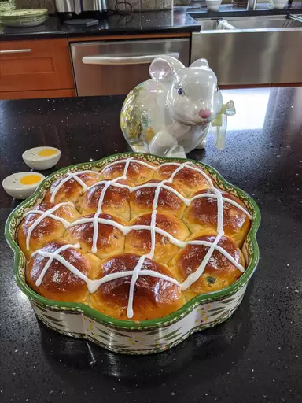

Hot Cross Buns Recipe

Description
A hot cross bun is a spiced sweet bun usually made with fruit, marked with a cross on the top,
and has been traditionally eaten on Good Friday
in the United Kingdom, Ireland, Australia, New Zealand,
South Africa, Canada, India, Pakistan and the United States.
[1] They are available all year round in some places,
including the UK.
Make Dough in a Stand Mixer:
Combine warm water and yeast in the bowl of the mixer and
let soften for about 5 minutes. Add flour, milk powder, 1/4
cup white sugar, egg, egg white, and salt. Mix, scraping the
dough down occasionally, on low speed using the dough hook
for 10 minutes. Add butter, currants, and cinnamon and mix
for an additional 5 minutes. Transfer dough to a greased
bowl, cover with plastic wrap and a kitchen towel, and
allow it to rise until doubled, about 1 hour. Proceed
with the recipe instructions.
Ingredients
- 1 large egg
- 1 large eggs, separated, divided
- 3 tablespoons butter, softened
- 1 tablespoon active dry yeast
- 1 tablespoon instant powdered milk
- ⅜ teaspoon salt
- ¾ cup dried currants
- 1 teaspoon ground cinnamon
- 2 tablespoons water
- ½ cup confectioners' sugar
- 2 teaspoons milk
- ¼ teaspoon vanilla extract
- 3 cups all-purpose flour
- ¾ cup warm water (110 degrees F/45 degrees C)
- ¼ cup white sugar
Steps
- Put flour, warm water, 1/4 cup white sugar, egg, egg white, butter, yeast, milk powder, and salt in a bread maker and start on dough program.
- When 5 minutes of kneading are left, add currants and cinnamon. Leave in the machine until doubled in size, about 1 hour.
- Punch down dough on a floured surface, cover, and let rest for 10 minutes.
- Shape into 12 balls and place in a greased 9x12-inch pan. Cover and let rise in a warm place until doubled, 35 to 40 minutes.
- Preheat the oven to 375 degrees F (190 degrees C).
- Mix egg yolk with 2 tablespoons water in a small bowl; brush on dough.
- Bake in the preheated oven until golden brown, about 20 minutes. Remove from pan immediately and cool on wire rack.
- Mix together confectioners' sugar, milk, and vanilla until smooth. Place glaze in a piping bag or a sandwich bag with the corner snipped off; pipe a cross onto each roll.